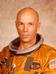

Lyndon B. Johnson Space Center
Houston, Texas 77058
|
National Aeronautics and Space Administration Lyndon B. Johnson Space Center Houston, Texas 77058 |
 |
Biographical Data |
||
Story Musgrave (M.D.)
NASA Astronaut (Former)
PERSONAL DATA: Born August 19, 1935, in Boston, Massachusetts, but considers Lexington, Kentucky, to be his hometown. Single. Six children (one deceased). His hobbies are chess, flying, gardening, literary criticism, microcomputers, parachuting, photography, reading, running, scuba diving, and soaring.
EDUCATION: Graduated from St. Mark's School, Southborough, Massachusetts, in 1953; received a bachelor of science degree in mathematics and statistics from Syracuse University in 1958, a master of business administration degree in operations analysis and computer programming from the University of California at Los Angeles in 1959, a bachelor of arts degree in chemistry from Marietta College in 1960, a doctorate in medicine from Columbia University in 1964, a master of science in physiology and biophysics from the University of Kentucky in 1966, and a master of arts in literature from the University of Houston in 1987.
ORGANIZATIONS: Member of Alpha Kappa Psi, the American Association for the Advancement of Science, Beta Gamma Sigma, the Civil Aviation Medical Association, the Flying Physicians Association, the International Academy of Astronautics, the Marine Corps Aviation Association, the National Aeronautic Association, the National Aerospace Education Council, the National Geographic Society, the Navy League, the New York Academy of Sciences, Omicron Delta Kappa, Phi Delta Theta, the Soaring Club of Houston, the Soaring Society of America, and the United States Parachute Association.
SPECIAL HONORS: National Defense Service Medal and an Outstanding Unit Citation as a member of the United States Marine Corps Squadron VMA-212 (1954); United States Air Force Post-doctoral Fellowship (1965-1966); National Heart Institute Post-doctoral Fellowship (1966-1967); Reese Air Force Base Commander's Trophy (1969); American College of Surgeons I.S. Ravdin Lecture (1973); NASA Exceptional Service Medals (1974 & 1986); Flying Physicians Association Airman of the Year Award (1974 & 1983); NASA Space Flight Medals (1983, 1985, 1989, 1991, 1993, 1996); NASA Distinguished Service Medal (1992).
EXPERIENCE: Musgrave entered the United States Marine Corps in 1953, served as an aviation electrician and instrument technician, and as an aircraft crew chief while completing duty assignments in Korea, Japan, Hawaii, and aboard the carrier USS WASP in the Far East.
He has flown 17,700 hours in 160 different types of civilian and military aircraft, including 7,500 hours in jet aircraft. He has earned FAA ratings for instructor, instrument instructor, glider instructor, and airline transport pilot, and U.S. Air Force Wings. An accomplished parachutist, he has made more than 500 free falls -- including over 100 experimental free-fall descents involved with the study of human aerodynamics.
Dr. Musgrave was employed as a mathematician and operations analyst by the Eastman Kodak Company, Rochester, New York, during 1958.
He served a surgical internship at the University of Kentucky Medical Center in Lexington from 1964 to 1965, and continued there as a U. S. Air Force post-doctoral fellow (1965-1966), working in aerospace medicine and physiology, and as a National Heart Institute post-doctoral fellow (1966-1967), teaching and doing research in cardiovascular and exercise physiology. From 1967 to 1989, he continued clinical and scientific training as a part-time surgeon at the Denver General Hospital and as a part-time professor of physiology and biophysics at the University of Kentucky Medical Center.
He has written 25 scientific papers in the areas of aerospace medicine and physiology, temperature regulation, exercise physiology, and clinical surgery.
NASA EXPERIENCE: Dr. Musgrave was selected as a scientist-astronaut by NASA in August 1967. He completed astronaut academic training and then worked on the design and development of the Skylab Program. He was the backup science-pilot for the first Skylab mission, and was a CAPCOM for the second and third Skylab missions. Dr. Musgrave participated in the design and development of all Space Shuttle extravehicular activity equipment including spacesuits, life support systems, airlocks, and manned maneuvering units. From 1979 to 1982, and 1983 to 1984, he was assigned as a test and verification pilot in the Shuttle Avionics Integration Laboratory at JSC. He served as a spacecraft communicator (CAPCOM) for STS-31, STS-35, STS-36, STS-38 and STS-41, and lead CAPCOM for a number of subsequent flights. He was a mission specialist on STS-6 in 1983, STS-51F/Spacelab-2 in 1985, STS-33 in 1989 and STS-44 in 1991, was the payload commander on STS-61 in 1993, and a mission specialist on STS-80 in 1996. A veteran of six space flights, Dr. Musgrave has spent a total of 1,281 hours 59 minutes, 22 seconds in space. Dr. Musgrave left NASA in August 1997 to pursue private interests.
SPACE FLIGHT EXPERIENCE: Dr. Musgrave first flew on STS-6, which launched from the Kennedy Space Center, Florida, on April 4, 1983, and landed at Edwards Air Force Base, California, on April 9, 1983. During this maiden voyage of Space Shuttle Challenger, the crew performed the first Shuttle deployment of an IUS/TDRS satellite, and Musgrave and Don Peterson conducted the first Space Shuttle extravehicular activity (EVA) to test the new space suits and construction and repair devices and procedures. Mission duration was 5 days, 23 minutes, 42 seconds.
On STS-51F/Spacelab-2, the crew aboard Challenger launched from the Kennedy Space Center, Florida, on July 29, 1985, and landed at Edwards Air Force Base, California, on August 6, 1985. This flight was the first pallet-only Spacelab mission, and the first mission to operate the Spacelab Instrument Pointing System (IPS). It carried 13 major experiments in astronomy, astrophysics, and life sciences. During this mission, Dr. Musgrave served as the systems engineer during launch and entry, and as a pilot during the orbital operations. Mission duration was 7 days, 22 hours, 45 minutes, 26 seconds.
On STS-33, he served aboard the Space Shuttle Discovery, which launched at night from the Kennedy Space Center, Florida, on November 22, 1989. This classified mission operated payloads for the Department of Defense. Following 79 orbits, the mission concluded on November 27, 1989, with a landing at sunset on Runway 04 at Edwards Air Force Base, California. Mission duration was 5 days, 7 minutes, 32 seconds.
STS-44 also launched at night on November 24, 1991. The primary mission objective was accomplished with the successful deployment of a Defense Support Program (DSP) satellite with an Inertial Upper Stage (IUS) rocket booster. In addition the crew also conducted two Military Man in Space Experiments, three radiation monitoring experiments, and numerous medical tests to support longer duration Shuttle flights. The mission was concluded in 110 orbits of the Earth with Atlantis returning to a landing on the lakebed at Edwards Air Force Base, California, on December 1, 1991. Mission duration was 6 days, 22 hours, 50 minutes, 42 seconds.
STS-61 was the first Hubble Space Telescope (HST) servicing and repair mission. Following a night launch from Kennedy Space Center on December 2, 1993, the Endeavour rendezvoused with and captured the HST. During this 11-day flight, the HST was restored to its full capabilities through the work of two pairs of astronauts during a record 5 spacewalks. Dr. Musgrave performed 3 of these spacewalks. After having travelled 4,433,772 miles in 163 orbits of the Earth, Endeavour returned to a night landing in Florida on December 13, 1993. Mission duration was 10 days, 19 hours, 59 minutes.
On STS-80 (November 19 to December 7, 1996), the crew aboard Space Shuttle Columbia deployed and retrieved the Wake Shield Facility (WSF) and the Orbiting Retrievable Far and Extreme Ultraviolet Spectrometer (ORFEUS) satellites. The free-flying WSF created a super vacuum in its wake in which to grow thin film wafers for use in semiconductors and the electronics industry. The ORFEUS instruments, mounted on the reusable Shuttle Pallet Satellite, studied the origin and makeup of stars. In completing this mission he logged a record 278 earth orbits, traveled over 7 million miles in 17 days, 15 hours, 53 minutes.
AUGUST 1997
{kind=link}